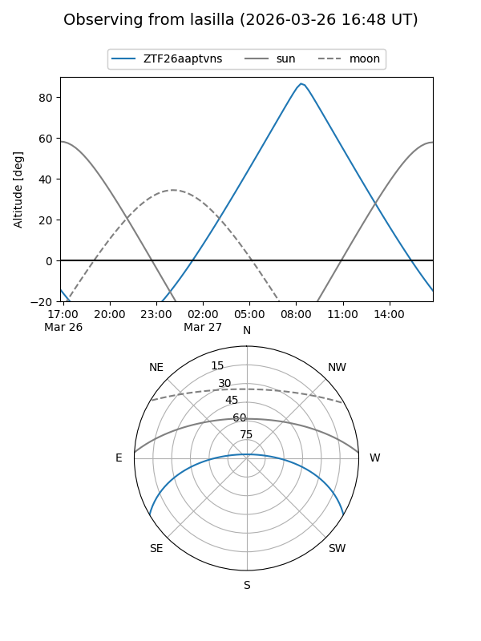
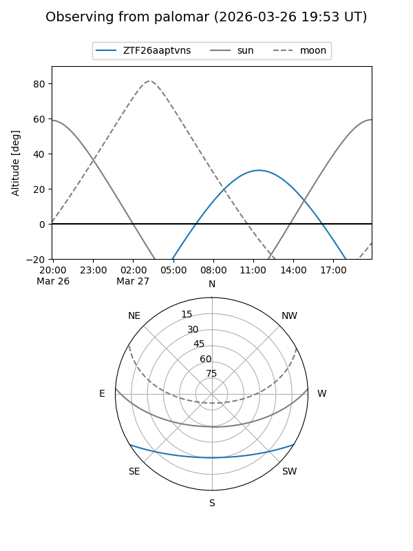

ZTF26aaptvns
Target ZTF26aaptvns at 2026-03-27 12:26
Aliases and brokers:
FINK: link
Lasair: link
ALeRCE: link
alt names
ZTF26aaptvns (ztf,fink_ztf)
Coordinates:
equatorial (ra, dec) = 239.2418,-25.99925
equatorial (HMS+DMS) = 15:56:58.03,-25:59:57.30
galactic (l, b) = (346.9725,+20.60574)
Flags:
Photometry:
last ztfg=18.96
1 ztfg detections
Lightcurve
Visibility


Additional plots